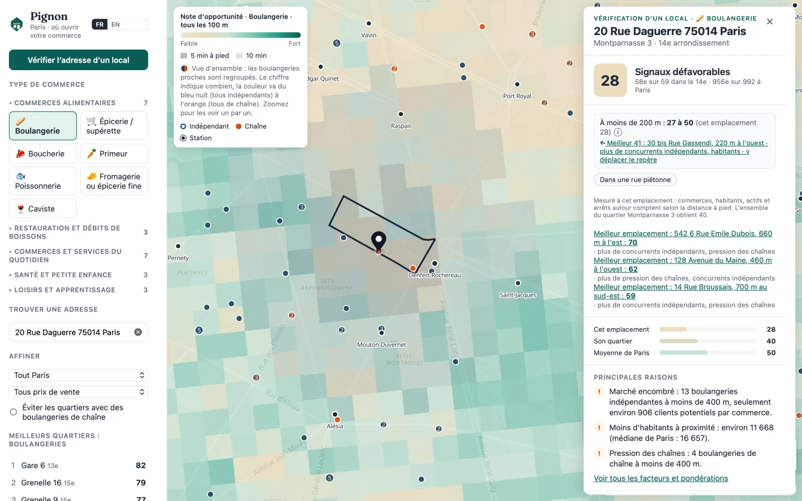
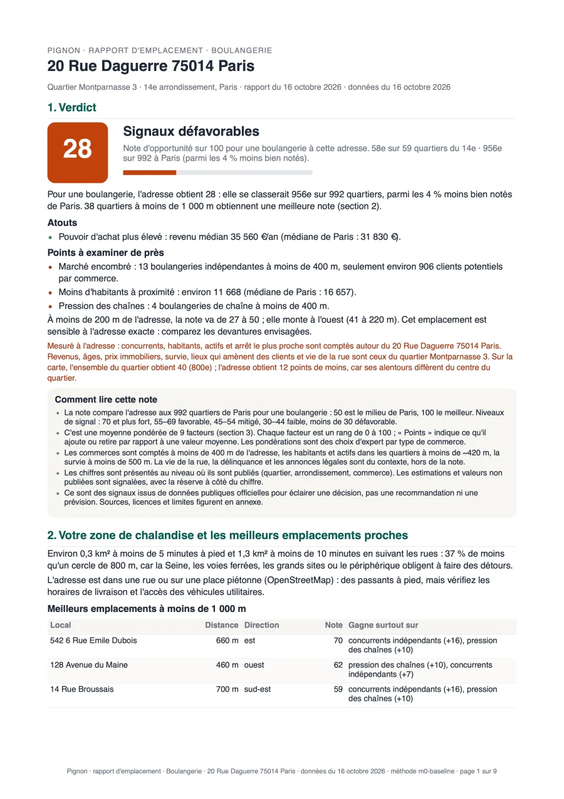

Où la demande dépasse l’offre
Combien de concurrents à 5 minutes à pied, et combien de clients potentiels pour chacun : habitants et actifs en journée.
Pour ouvrir un commerce à Paris
Vous avez trouvé un local ? Vérifiez-le avant de signer. Pignon note l’adresse pour votre type de commerce, explique chaque chiffre et vous remet un rapport que votre banquier peut lire.
Uniquement des données publiques officielles · 23 types de commerce · tout Paris

Les données existent déjà : INSEE, registre des entreprises, ventes immobilières, transports. Elles sont simplement dispersées et illisibles. Pignon les rassemble et les explique.
Combien de concurrents à 5 minutes à pied, et combien de clients potentiels pour chacun : habitants et actifs en journée.
Un Paul ou un Monoprix ne pèse pas comme une boutique indépendante. Pignon les distingue, sur la carte et dans la note.
Combien de commerces du même métier ont ouvert ici, combien ont tenu trois ans, et pourquoi les autres ont fermé.
Quelques chiffres du recensement et de l’état civil que Pignon suit quartier par quartier, et met dans chaque rapport.
des ménages parisiens n’ont pas de voiture : un signe fort pour le commerce de proximité.
des actifs parisiens vont travailler à pied ou à vélo, contre 15 % en 2017.
de naissances à Paris entre 2015 et 2025 : la demande des familles se déplace.
d’habitants entre 2017 et 2022, avec de fortes différences d’un quartier à l’autre.
Sources : INSEE, recensements 2017, 2022 et 2023 ; état civil 2015 et 2025. Calculs Pignon.
Boulangerie, café, pharmacie, fleuriste, coiffeur… 23 types, regroupés en 5 familles.
Une note sur 100, comparée au quartier et à Paris, avec les trois raisons qui pèsent le plus et le chiffre derrière chacune.
La carte est notée rue par rue, tous les 100 m. Pignon signale les locaux mieux placés à quelques minutes et ce qu’ils gagnent.
Un PDF d’environ huit pages pour votre dossier bancaire ou votre conseiller CCI, avec la méthode et toutes les sources.

Pour une adresse et un type de commerce. Conçu pour être joint à un business plan : chaque chiffre a sa source, chaque estimation est signalée.
Exemple réel : une boulangerie au 20 rue Daguerre, Paris 14e, données d’octobre 2026.
La liste des sources est un argument, pas une note de bas de page. Chaque chiffre de Pignon renvoie à son producteur et à sa date.
Licence Ouverte 2.0 (Etalab) et ODbL, avec attribution. Les données communautaires (OpenStreetMap) sont signalées comme telles.
Pas de note sans ses raisons. Si un chiffre ne s’explique pas, il n’est pas affiché.
Pignon éclaire votre décision. Il ne vous dit jamais de signer.
La délinquance est publiée par arrondissement : elle est montrée par arrondissement. Les estimations sont signalées.
Hébergé en France : l’application et ses données sont sur des serveurs à Paris. Pignon ne conserve pas les adresses que vous vérifiez.
Et un nouveau type en un jour : chacun est un simple fichier de configuration.
Gratuit
49 € par adresse, paiement unique
Prix indicatif avant lancement. Aucun abonnement.
Non. Pignon est un outil d’aide à la décision : il présente des indicateurs issus de données publiques et la méthode qui les combine. La décision reste la vôtre, avec votre banquier, votre conseiller et le bailleur.
Non, et nous le disons : aucune source ouverte ne publie les loyers commerciaux. Pignon montre les prix de vente immobiliers (DVF), clairement signalés comme des prix de vente.
Tout Paris, ses 20 arrondissements et environ 990 quartiers. Les grandes sources sont nationales : d’autres villes suivront.
Chaque source a son propre rythme : le registre des entreprises est rafraîchi chaque semaine, le recensement chaque année. La date de chaque source figure dans l’application et dans le rapport.
Pour les fondateurs de commerces indépendants : premier ou deuxième commerce, souvent après une reconversion. Les conseillers CCI, CMA et les banques sont les bienvenus.
En France. L’application et sa base de données tournent sur des serveurs à Paris, et la recherche d’adresse passe par la Géoplateforme de l’IGN, le service public français. Pignon ne conserve pas les adresses que vous vérifiez, et aucun compte n’est nécessaire pour explorer la carte.
Pignon est en test avec des fondateurs à Paris. Laissez votre e-mail : nous vous écrirons à l’ouverture.